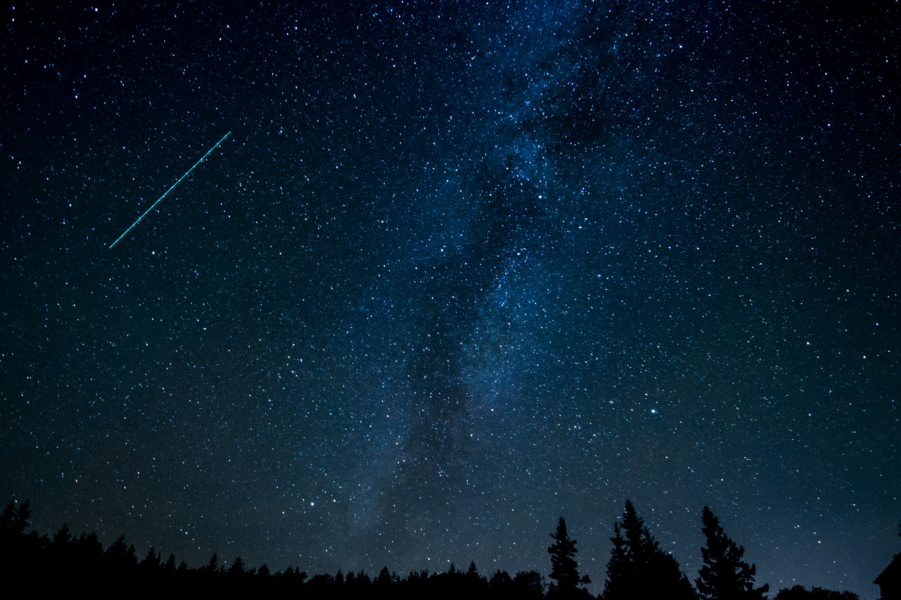

Overview
Stars are luminous spheres made of plasma – a superheated gas threaded with a magnetic field. They are made mostly of hydrogen, which stars fuse in their cores. That process releases energy, which pushes against the weight of the outer layers of the star and keeps it stable. The energy is also released as heat and light, which are radiated out to space. Stars are the main components of galaxies, and were among the first objects to form in the early universe. The closest star to Earth is the Sun.